Let Your Workflow
Let Your Workflow
How a Workflow Helps Bring It Together
In organizations, ‘workflow’ refers to a structured sequence of tasks designed to achieve a specific goal. In OneStream’s case, this is mainly the movement of data or information. On an operational level, this is the set-up of the right tasks for the right users at the right time, while helping to ensure data integrity in the financial model (cubes).
Here is this chapter’s learning journey:
Figure 7.1
Let Your Workflow › How a Workflow Helps Bring It Together
The Purpose of Workflow
Workflow in OneStream is the platform’s backbone that drives most user interaction. It can be seen as the business process that is used to model and analyze data in a cube, and sometimes referred to as the responsibility hierarchy.
Simply put, end-users cannot do anything without tasks, which shows how important the workflow component (that provides the tasks) is. It controls all user activity, guiding them through tasks to complete data loads, adjustments, analysis, and data certification.
At Top Training’s group level, the workflow assists with the data consolidation process.
Let Your Workflow › How a Workflow Helps Bring It Together
Workflow Profile Types
Workflow Profiles are found in the Application tab and are the building blocks of a workflow hierarchy. These are the task items that need to be performed by the users. The profiles, like other artifacts in OneStream, differ by Scenario Type.
The tasks within a Workflow Profile can be configured to each organization’s requirements, additional ones can be added, or existing ones removed. Each Workflow Profile name created must be unique.
Let Your Workflow › How a Workflow Helps Bring It Together › Workflow Profile Types
Base Input Profiles
Base Input Profiles have three tasks, which are Import, Forms, and Adjustments (Journals), and are worked on by the operational team within a business area. These tasks can be renamed, additional ones added, or individual ones deactivated. The profile establishes the relationship between the workflow hierarchy and Entity members.
The tasks of Import, Forms, and Adj will be automatically linked to members in the Origin dimension, as shown in Figure 7.2.
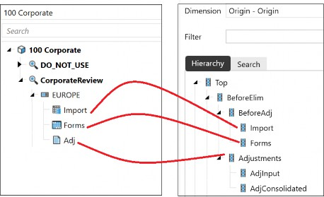
Figure 7.2
Let Your Workflow › How a Workflow Helps Bring It Together › Workflow Profile Types
Parent Input Profiles
Parent Input Profiles have two tasks, which are Forms and Adjustments (Journals), used for top-side adjustments to parent entities.
As per the Base Input Profiles, the parent input also has a relationship with the Entity members, and the two tasks are linked to the Forms and Adj members’ Origin dimension.
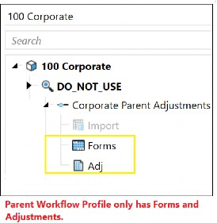
Figure 7.3
Let Your Workflow › How a Workflow Helps Bring It Together › Workflow Profile Types
Review Profiles
Review profiles do not have any tasks, but the profile facilitates reviewing of the data and sign-off certification. It will be read-only and is usually worked on by an area or group manager.
The review profile acts as a good checkpoint for the base and parent Workflow Profiles and does not have any direct relationship with entity or origin members. It is also possible to have cube calculations in review profiles that help control the sign-off process.
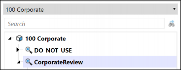
Figure 7.4
Let Your Workflow
Constructing The Workflow
Building a workflow structure starts with creating a Cube Root Workflow Profile. To create a cube root, we must remember the particular setting that needs to be applied. This was discussed in a previous chapter, specifically the one on cubes. Need a reminder? It is the Is Top Level Cube For Workflow setting, under the Workflow section of the Cube Properties tab, as per Figure 7.5.
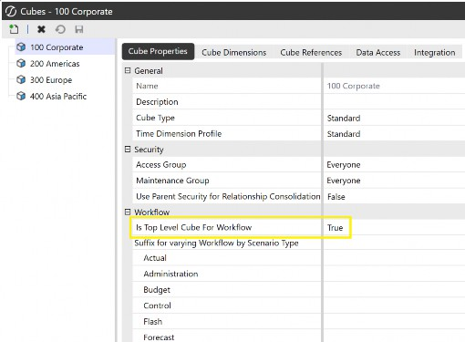
Figure 7.5
When designing the workflow, we can sketch out a draft of workflow hierarchies beforehand, which in turn will show the entities that are responsible for each segment of the workflow, as shown in Figure 7.6. By doing this, it becomes apparent which of the cubes in our model will drive all the hierarchies. That cube will have a relationship with the entities required and, therefore, will have the Is Top Level Cube For Workflow set to True. In Top Training, the setting has been applied to the 100 Corporate Cube.
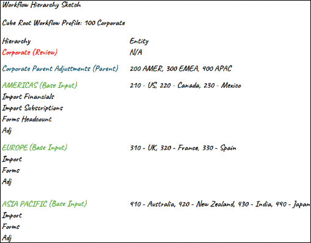
Figure 7.6
We can now create our Cube Root Workflow Profile. Once this has been done, note how the platform creates what is known as a Default_Workflow.
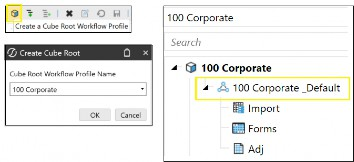
Figure 7.7
This is the platform’s go-to for calculating workflow status, by establishing a relationship between the workflow hierarchy and the Entity members, and is therefore required for each workflow hierarchy.
All entities are initially assigned to the default profile automatically (and then reassigned as and when new workflows are created).
Any modifications made to properties in the default profile will affect entities that remain within it, causing issues when later reassigned to their respective workflows. For example, if the Adj is deactivated in the default profile, this will now not be available to any of the entities within it, that have not yet been assigned elsewhere.
For its purpose to remain intact, it should not be used or deleted. Instead, it will be better to house it under a DO_NOT_USE structure that can be created from a review Workflow Profile type. Further to this, security can be applied to limit access to the default profile.
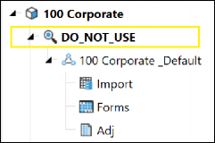
Figure 7.8
Workflow Profiles can be created by selecting the Create Child Under Current Workflow Profile and opting for either a Base, Parent, or Review profile.
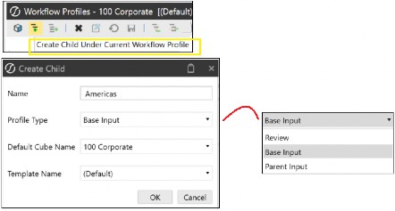
Figure 7.9
For the base and parent profiles, the tabs that are available are Profile Properties, Calculation Definitions and Entity Assignment. For the review profile, it’s Profile Properties and Calculation Definitions.
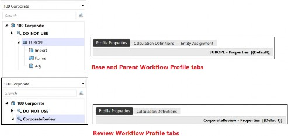
Figure 7.10
Let Your Workflow › Constructing The Workflow
Profile Properties
This is the primary tab for workflow configuration. Profile Properties will vary by Scenario Type. The key configuration fields are:
Let Your Workflow › Constructing The Workflow › Profile Properties
Security
At the default Scenario Type, an Access Group can be created. The users in this group will have access to the Workflow Profile at run time to view results, as well as a Maintenance Group (who are also part of the Access Group) that controls which users can administer the profile.
By individual Scenario Type, the Workflow Execution Group and Certification Signoff Group allow for the loading of data and sign-off on the workflow, respectively.
For further understanding on workflow security, refer to the OneStream Administrator Handbook where this is extensively covered.
Let Your Workflow › Constructing The Workflow › Profile Properties
Workflow Name
These are the tasks that users need to complete in the workflow. As there are a lot of combinations here, the selection will be based on the workflow design. The list drop-down selection will vary depending on which input type is being worked on; for example, an Import type will have import-related tasks, and an Adj type will have journal-related tasks.
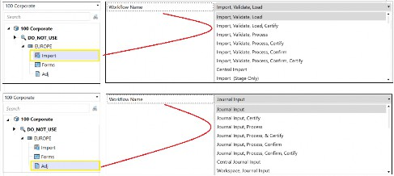
Figure 7.11
The tasks chosen will then reflect what the user will see in the navigation pane in the
OnePlace tab. For example, in Figure 7.12, the tasks are Import, Validate, and Load.
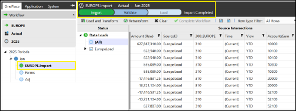
Figure 7.12
| Note: When importing data, the four data load methods available to the user are: Replace (clears existing values then loads new values from the file), Replace (All Time) (clears existing values and then replaces values in all time periods for a selected year), Replace Background (All Time, All Source ID’s) (clears existing values, replaces all periods for a selected year and also replaces all the source IDs), and finally Append (the existing values are unchanged and rows of data are added, not included, in the previous data load file). |
Let Your Workflow › Constructing The Workflow › Profile Properties
Profile Active
This is where a True / False setting determines if the active profile will be seen on the workflow page or not. Deactivating the profile should always be the preferred option to deleting it altogether.
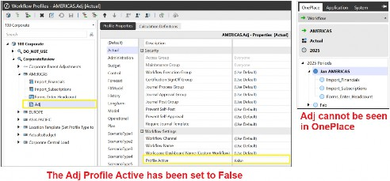
Figure 7.13
Let Your Workflow › Constructing The Workflow › Profile Properties
Data Source and Transformation Profile Name
Previously, in the chapter on ‘Importing that all Important Data’, the data source type was created. Remember, this was telling OneStream how to read the source file.
Then, the transformation rules were assigned, which was the mapping of the source items to the target members.
Both artifacts can now be added to the import task of the Workflow Profile, as in Figure 7.14.
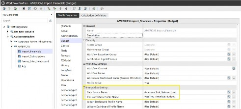
Figure 7.14
Let Your Workflow › Constructing The Workflow › Profile Properties
Input Forms Profile Name
The Form input type is a data entry form. This is created from the Form Templates menu. In this menu, the data entry form can use a Cube View or Spreadsheet to be the method of entry, and created within a Form Template Group and then put in a Form Template Profile.
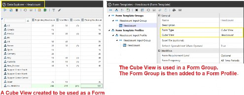
Figure 7.15
The Form Profile is then selected in the Workflow Profile, allowing users to access the form from the OnePlace tab.
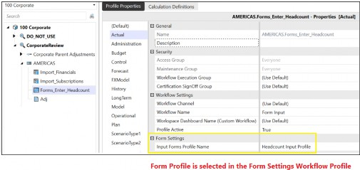
Figure 7.16
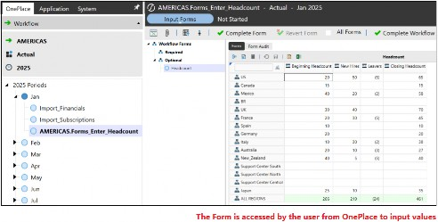
Figure 7.17
Let Your Workflow › Constructing The Workflow › Profile Properties
Journal Template Profile Name
Like the Form Template, a Journal Template is created in a Journal Template Group and then slotted into a Journal Template Profile.
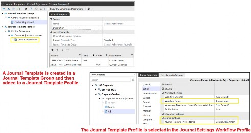
Figure 7.18
The Journal can then be accessed by the user from the OnePlace tab.
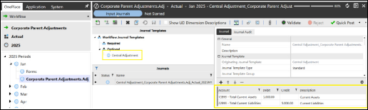
Figure 7.19
Let Your Workflow › Constructing The Workflow › Profile Properties
Confirmation Profile Name
Confirmation rules are visual checklists embedded within the workflow and used to verify whether data is breaching a threshold, by either providing a warning, or an error that prevents the user from moving forward. A confirmation rule can be configured to get the user to attach a file or comment.
All confirmation rules are optional to have as part of the workflow but – if used – will place more ownership to ensure the integrity of the data, together with the choice for documentary or commentary evidence.
To run the rule, the workflow must have a workflow name containing Confirm with a Process task required before it (together with the calculation definition having Confirm selected as well).
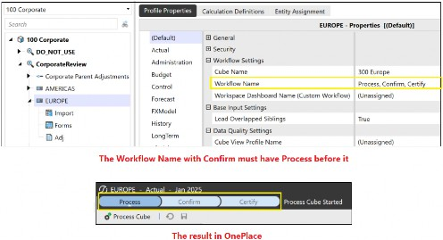
Figure 7.20
Once run, the status for each rule is shown with green representing passed, orange representing warning, and red representing fail.
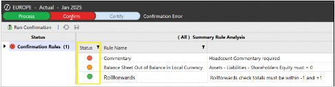
Figure 7.21
The rule is created in a group. Each rule is a line consisting of the rule name, rule text and an embedded business rule that performs the integrity check.
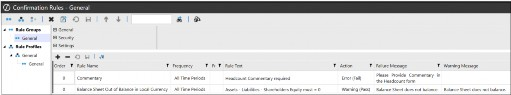
Figure 7.22
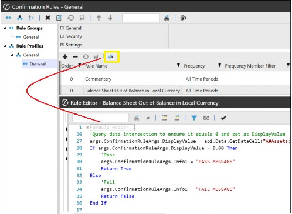
Figure 7.23
The group is then attached to a profile in the Confirmation Profile Name setting.
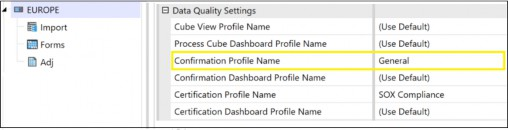
Figure 7.24
Let Your Workflow › Constructing The Workflow › Profile Properties
Certification Profile Name
Certification is usually considered one of the last tasks in a workflow, consisting of specific questions to sign off the data.
Once again, like confirmation rules, a certification questionnaire is optional but may provide added data integrity for organizations that have to comply with external requirements. Created in a Question Group that consists of Name, Category, Risk Level, and Question Text, it can then be added to a Question Profile, where the profile is embedded in the workflow that uses a Certify task in its workflow name.
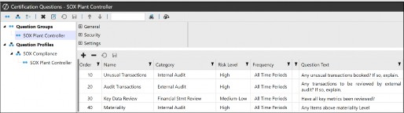
Figure 7.25
If no questions are required, a Quick Certify can be used if there is a certification task in the workflow (the Quick Certify option is selected in the workflow). This will only need a response to Is the workflow complete?
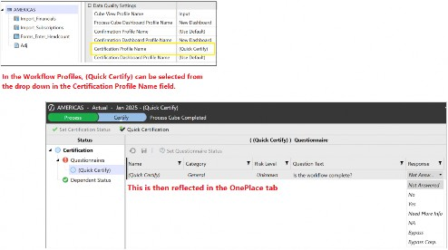
Figure 7.26
Let Your Workflow › Constructing The Workflow › Profile Properties
Intercompany Matching Settings
This is where intercompany matching is initiated. When Matching Enabled is set to True, the Matching Parameters section needs to be configured. For Top Training, we would like to set up the US, Canada, and Mexico entities to be able to trade with each other. Figure 7.27 shows the matching parameters.
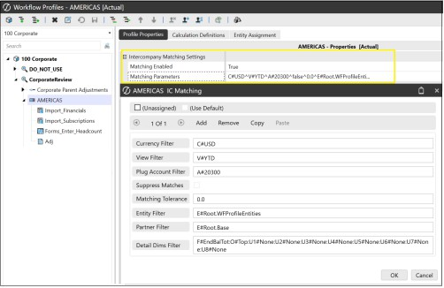
Figure 7.27
For intercompany to take place, entities would have been assigned the is IC Entity as True, in the Entity dimension. Then, intercompany accounts will need to have been set up for IC Sales and IC Purchases, as an example, and a Plug that will hold any differences (the Plug Account will have been embedded in the IC Sales and IC Purchases settings).
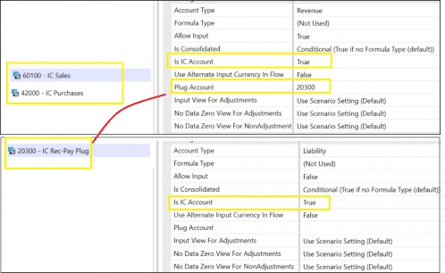
Figure 7.28
The intercompany values are entered in an intercompany data entry form, created from a Cube View or Spreadsheet.
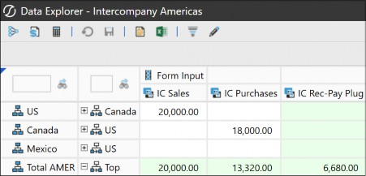
Figure 7.29
In OnePlace, we can see the IC Matching when we select the workflow where the matching has been enabled.
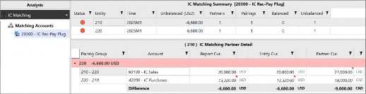
Figure 7.30
We can also run Application Reports that provide intercompany details and status.
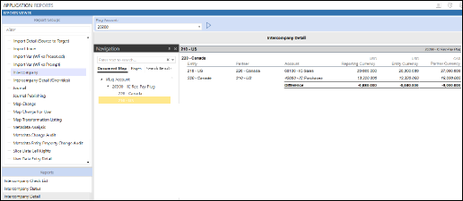
Figure 7.31
Let Your Workflow › Constructing The Workflow
Calculation Definitions
This is the second tab (which we briefly discussed in the previous chapter on Figuring Out Calculations). This is where the administrator assigns the calculations required when the user selects Process in the OnePlace tab.
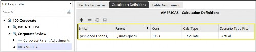
Figure 7.32
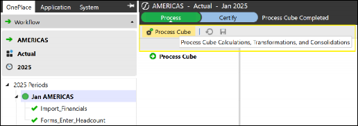
Figure 7.33
The calculation definition can be used to run a combination of calculations, translations, and consolidations, as well as just being set up to run a data management job in the Filter Value field. If using a data management job, then set the Calc Type to No Calculate, as shown in Figure 7.34.
| Note: An Eventhandler rule will have been created in the business rules menu. This is the trigger to run a job after, say, a task has been performed. In this case, a DataQualityEventHandler business rule will run the data management job after the process cube task has been executed. |
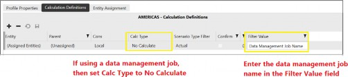
Figure 7.34
Let Your Workflow › Constructing The Workflow
Entity Assignment
This tab is where the entities are assigned to the workflow. As entities can only be assigned once to a particular cube’s workflow (a cube can have many base, parent, or review workflows), the Unassigned Base Entities section on the right will not show any entities that have already been assigned to another workflow within the same cube.
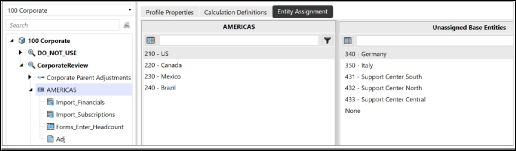
Figure 7.35
Assigning entities to the workflow will then mean items such as calculation definitions and confirmation rules will be processed, as well as the locking mechanism for the workflow.
Let Your Workflow › Constructing The Workflow › Entity Assignment
Workflow Suffix
As we are initially limited to entities only being assigned to one workflow from the same cube, creating workflow suffixes allows for separate workflow structures in the same cube, and this will allow entities to be reused. The separate workflow structure allows for different data collection points, security, and approval processes.
There are points to note when working with suffixes. They can be seen as the workflow’s version of extensibility, and as such, suffixes should be the backbone of a proper design of extensibility; it’s precisely because of suffixes that OneStream can be tailored to each business process that helps reduce the maintenance.
They should only be used for Scenario Types being implemented. A workflow suffix for any Scenario Type cannot be added or updated once data is loaded, so suffixes should be added early on when creating workflows.
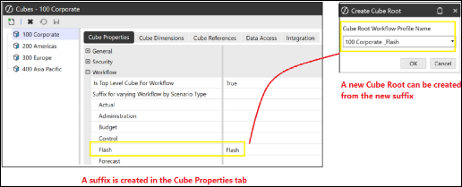
Figure 7.36
Not every Scenario Type needs to have a separate suffix. If Budget and Forecast follow the same process, they can be grouped together under the same suffix.
Let Your Workflow
Keep A Workflow Template Handy
A nice feature when creating Workflow Profiles is a Workflow Template. As the name suggests, an administrator can create a template to a bespoke standard version, and then select it every time a new Workflow Profile is constructed.
A bespoke version might require additional base input types that will need renaming. Or some input types that need to be disabled. A workflow template is useful when required to build a series of, for example, base input Workflow Profiles with similar settings.
Workflow templates are found in the Work With Templates menu. A new template can be created by using the option Create a Sibling of the Current Workflow. If additional inputs are required, then the Create Child Under Current Workflow Profile option is used.
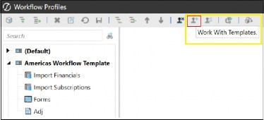
Figure 7.37
Once a template has been completed, back in Work With Profiles the option of using a Template Name is available when building the base or parent profile type, as in Figure 7.38.
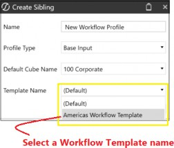
Figure 7.38
If the workflow template is updated, this can be reflected back in the Workflow Profile by using Update Input Children Using Template. By selecting the Input Profiles on the left of the window, and the Input Templates on the right, the existing Workflow Profile will be updated with the template’s changes.
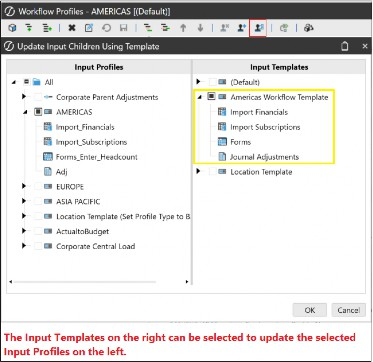
Figure 7.39
Let Your Workflow
Conclusion
A lot of what we have learned in the previous chapters has led to this point where the likes of cubes (and not forgetting the dimensions required to build them), data sources, transformation rules, and calculation artifacts have all come together to form part of the construction of the workflow.
From this really important chapter, we have seen that workflow is how an end-user interacts with the platform, providing the user with their specific tasks at certain time intervals. It is down to the administrator or implementing partner to construct the workflow and – to make this easier – templates can be created first. The use of a template when constructing Workflow Profiles means that any updates on input types can be cascaded to many profiles in one go.
The construction of the workflow starts with the cube root, where the Workflow Profiles are added. There are base, parent, and review Workflow Profiles with input types of Import, data entry Forms, and Journal Adjustments. It might be advisable to first sketch out the workflow hierarchy to understand how many of each are required.
Once the profiles have been created, their properties will require configuration for security, workflow names, any data source, and transformation rules. Other options may then be considered; for example, if data entry or adjustments are required as a task, then the profile will select the Form or Journal profiles. Or if intercompany transactions are required to be done, then matching will be enabled.
For data quality and data integrity confirmation rules and certification, questions are applied to the Workflow Profile, which is usually used by the reviewer. They do so to complete the final workflow steps and certify their business area for corporate to then consolidate the values.